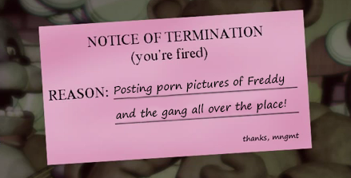

- Содержание
plot |
|
Начинается всё с того, что главный герой по имени Майк Шмидт (его имя мы узнаём в конце игры)
находит в газете объявление «Требуется сотрудник». В нём говорится о том, что в Freddy Fazbear’s Pizza
нужен охранник для работы в ночную смену с 0:00 до 6:00 утра.
В его обязанности входит: наблюдение за изображением камер, охрана оборудования и аниматроников.
Оплата предлагается весьма скромная: 120 долларов в неделю. Также упоминается, что компания не несёт ответственность за травмы и расчленение.
Весьма…странное предупреждение для охранника пиццерии. Но к этому мы вернёмся позже. Майк оказывается в своём офисе, где из окружения лишь стол, на котором стоят множество телевизоров и вентилятор, плакаты и рисунки детей на стене и две двери справа и слева. Шмидту предстоит просидеть в этом заведении пять ночей, прежде чем получит зарплату. А в начале каждой ночи ему будет звонить некий телефонный парень или же Phone guy (Фон гай), через которого мы и будем узнавать основной сюжет игры. Ночь 1 В первую ночь мы узнаём, что Фон гай работал в этом офисе до нас и на момент записи этих звонков заканчивает свою смену. Говорит нам о том, что нам нечего здесь беспокоиться и настаивает сосредоточиться на нашей смене. Далее Фон гай зачитывает нам приветствие от компании: «Добро пожаловать в Freddy Fazbear’s Pizza, волшебное место для детей и взрослых, где фантазии и веселье становятся явью. Freddy Fazbear’s Pizza не несёт ответственности за ущерб, нанесённый имуществу или личности. После обнаружения того, что произошла смерть или травма, отчёт о пропаже будет подан в течение 90 дней, или как только имущество и помещения будут тщательно очищены и выбелены, а ковры заменены…» Всё это действительно звучит странно и пугающе. Уже во второй раз компания даёт понять, что работа вовсе не безопасная. Но Фон гай по-прежнему просит нас не беспокоиться. Далее телефонный парень рассказывает про главный атрибут пиццерии — аниматроников. Он подмечает, что роботы становятся немного странными ночью, за что их вовсе не винит: «… Если бы я был вынужден петь одни и те же тупые песни в течение 20 лет, да ещё и ни разу не принимать ванну, я, наверное, тоже был бы раздражительным ночью…» Фон гай оправдывает их странность так, будто они живые разумные существа. Сама же странность заключается в том, что аниматроники ходят ночью по всей пиццерии. Компания специально оставляет их в режиме свободного передвижения, так как их сервоприводы заблокируются, если их долго не включать. Маскоты ресторана раньше могли ходить и днём, пока не произошёл Укус «87», после которого человек остался без лобной доли мозга. К этому укусу вернёмся позже. Далее телефонный парень рассказывает о главной загвоздке этой работы. Дело в том, что аниматроники, увидев охранника в нерабочее время, не узнают в нём человека. Вместо него они увидят железный эндоскелет без костюма и попытаются насильно засунуть охранника в костюм Фредди Фазбера. Всё было бы не так плохо, если бы костюмы не были малы для человека и не были заполнены всякими балками проводами и так далее. Особенно в лицевой области. Поэтому действия маскотов приведут к смерти охранника. «…Э-э, единственная часть тебя, которая, скорее всего, увидит снова дневной свет, будет твоими глазными яблоками и зубами, что выскочат из лицевой части маски, хех». Теперь понятно, о чём говорилось в газете и приветствии. Работа в этом месте — смертельный приговор. В конце записи Фон гай говорит не отчаиваться, ведь первый день будет «бризом». Также напоминает про экономию электроэнергии, ведь она не вечна. А затем прощается. Успешно отсидев первую ночь, закрывая двери, чтобы не пробрались внутрь аниматроники, Майк возвращается домой, чтобы вернуться на следующий день на свою новую работу. Непонятно только одно — почему Майк не уволится с работы, зная, насколько она опасна. Ночь 2 Приступая к дежурству, нам вновь «звонит» Фон гай, где поздравляет нас с успешной сменой в первую ночь. Далее он рассказывает, что Фредди и его друзья, как правило, становятся активнее по мере течения недели. Советует проверять камеры на всякий случай, пока он говорит, чтобы убедиться, что все на месте. Телефонный парень подмечает, что Фредди редко сходит со сцены и становится активным в темноте. Ещё одна причина того, что надо экономить электричество. В этот раз Фон гай подробнее рассказывает, как нам защищаться от персонажей пиццерии, упоминает про включение света и закрытие дверей. Ведь у нас будет всего несколько секунд, прежде чем аниматроники доберутся до нас. Опять же телефонный парень просит не беспокоиться об этом. Под конец записи Фон гай упоминает ещё одного персонажа, который находится в Пиратской бухте. Советует нам чаще наблюдать за ним по камерам. Так он становится менее активным. «…Я предполагаю, что ему не нравится, когда за ним наблюдают. Я не знаю. В любом случае, я уверен, что у тебя всё будет под контролем». Ну, а затем телефонный парень прощается с нами. Ночь 3 В третью ночь Фон гай вновь поздравляет нас с успешно выполненной работой. Говорит, что большинство людей не продержались так долго. Конечно, он имеет в виду смену работы, а не гибель от рук аниматронных зверей. Он постарается не занимать слишком много времени, чтобы мы не оказались в опасности. Поэтому в эту ночь рассказывает не особо много информации. Лишь одну идею: «…Эй, послушай, у меня есть идея: если тебя словят, и ты захочешь избежать выживания в костюме Фредди, э-э-э, попробуй притвориться мёртвым! Ты знаешь, притихнуть…» В таком случае Фон гай предполагает, что аниматроники могут подумать, что охранник не эндоскелет, а пустой костюм. Но тогда они могут попробовать натянуть человека на эндоскелет, что будет намного болезненнее. В очередной раз становится понятно, что быть пойманным аниматроником означает умереть в муках. И нет другого спасения, кроме как закрывать двери перед ними. В конце записи телефонный парень в очередной раз прощается с нами. Ночь 4 Четвёртая ночь становится роковой для Фон гая. В начале записи звонка говорит о том, что завтра его может и не быть, чтобы отправить Майку сообщение. На фоне записи мы слышим стуки в дверь. Для телефонного парня четвёртая ночь выдалась плохой. И он рад, что записывал эти сообщения для нас. Также он просит сделать ему одолжение: проверить один из костюмов в помещении рядом со сценой, ведь ему всегда было интересно, что находится в этих «пустых головах». Далее, как слышно по записи, он погибает от рук аниматроников. «…Э-э-э, м-м-м-мне всегда было интересно, что в этих пустых головах на заднем плане. *марш Тореадора (мелодия Фредди)*. Ты знаешь… *вздох* О, нет — *скример аниматроника*». Прожив четвёртую ночь до конца, Майк вновь возвращается домой. Последние ночи На пятую ночь нам снова «звонят» в офис. На записи вместо Фон гая мы слышим искажённый голос, предположительно голос Фредди. Запись является реверсированным и ускоренным чтением отрывка из Автобиографии Йоги. (Пропущено: Сэр,) это прискорбно, что массовое развитие сельского хозяйства не ускорилось до более полного использования ваших чудесных механизмов. Разве не было бы легче использовать некоторые из них в быстрых лабораторных экспериментах, чтобы указать влияние различных видов удобрений на рост растений? Вы правы. Бесчисленное использование (пропущено: базы инструментов) будут сделаны будущими поколениями. Ученый редко получает одновременное вознаграждение; достаточно получить радость создателя (пропущено: много обслуживания). (Обрывки статического крика) В конце смены мы получаем долгожданный чек с зарплатой в 120 долларов, как и говорилось в газете, где мы и узнаём впервые имя главного героя. Компания поздравляет нас с хорошей работой и желает увидеть нас на следующей неделе. А после прохождения седьмой, Майку вручают повестку об увольнении. Причины: манипуляции с аниматрониками, общий непрофессионализм и запах. Манипуляции? Запах? Довольно странные причины для увольнения с работы. На этом и заканчивается основной сюжет игры… Ну, или почти заканчивается. Но пока давайте посмотрим на геймплей и персонажей, с которыми нас знакомят в игре. |
|

|
|
- Список источников
- - Сюжет FNaF 1
- - Фрэдди Фазбер